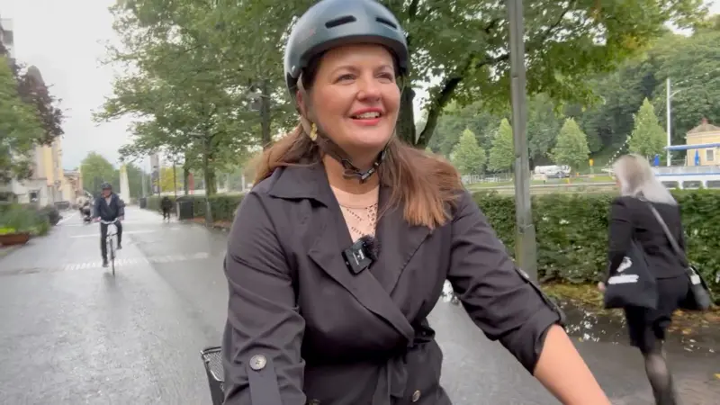

7 veces en las que las grandes potencias negociaron el futuro de países y territorios sin contar con las poblaciones afectadas
Ucrania no fue invitada a la reunión clave entre funcionarios estadounidenses y rusos en Arabia Saudita esta semana para decidir cómo podría ser la paz en el país.
"La solución para combatir el cambio climático está en el liderazgo femenino": las mujeres que lideran la ciudad verde más ambiciosa de Finlandia
"La solución para combatir el cambio climático está en el liderazgo femenino", afirma Marjo Kaartinen, rectora de la universidad de la ciudad de Turku.
Esta en la ciudad más antigua de Finlandia, que también es pionera en la acción climática.
"Países puente": los problemas que enfrentan Panamá y Costa Rica al ayudar a la política de deportación de Trump
Su destino era Estados Unidos, pero muchos se encuentran ahora en un limbo. En torno a medio millar de migrantes, principalmente procedentes de países asiáticos, están siendo deportados por el gobierno de Donald Trump hacia Panamá y Costa Rica desde donde -se espera- los trasladen a un nuevo destino.
"Me provocaron un fallo cardiaco a los 30 años": los riesgos de los esteroides para aumentar la masa muscular
Sufrió un fallo cardiaco a los 30 años y cree que tomar esteroides acortará su vida 20 años, pero Joey Farrell sigue consumiendo fármacos para aumentar su masa muscular "por el bien de su carrera".